04
04
Case Study · Product Design · 2020 · AIB x GAA · Concept
04
Case Study · Product Design · 2020 · AIB x GAA · Concept
This project was designed in full but never built. It was shelved due to time constraints during COVID.
Concept · Not shippedAt the start of the pandemic, AIB came to me with a brief rooted in their GAA sponsorship. With clubs closed and communities dispersed, they wanted to use sport to hold people together. The 5K challenge was already part of the national conversation, this was an opportunity to make it mean something for GAA players specifically.
The concept was a run tracker that connected directly to Strava, let users represent their club and county, and competed collectively on leaderboards. At the end of the summer, the club with the most combined runs would win prize money from AIB for their club.
I was briefed directly by AIB and designed the full product: brand identity, app UX, onboarding flows, a complete achievement badge system with custom Celtic illustration, county and club leaderboards, and a club face-off feature. The work was presented to stakeholders before COVID priorities shifted the brief elsewhere.
AIB, using their GAA sponsorship platform. Designed to strengthen community connection during the first COVID lockdown.
Brand identity and logo, full app UX design, all screen design, onboarding flows, illustrated achievement badge system, stakeholder presentation.
This project shows the full range: strategic brief response, brand thinking, product UX, and detailed illustration craft. The fact it never shipped doesn't diminish any of that.
Ireland's GAA clubs are the heartbeat of their communities. With everything closed, AIB wanted to use sport and their sponsorship to give people a reason to keep going. Literally.
A Strava-connected app where individual runs count toward your club's collective total. County leaderboards, a club face-off feature, and an achievement badge system to reward consistency and effort.
The achievement system needed to feel earned. I designed 12 custom badges rooted in Celtic illustration traditions, based off of All-Ireland medals. Gold for top achievements, silver for milestones. Each one designed from scratch.
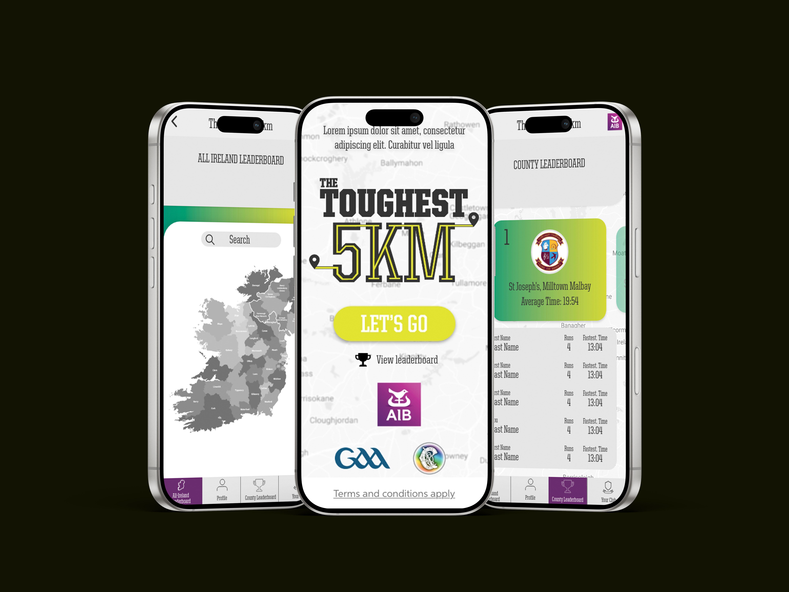
Taking inspiration from Audible's badge system, I designed a full achievement library for the app. Gold medals for the biggest accomplishments: Beast Mode, Top of the Class, Made the Team. Silver for the quieter ones: running in the rain, running at night, hitting your first milestone.
Every badge uses Celtic knotwork as its structural language, tying the achievement system directly to GAA's cultural roots. Designed from scratch in Illustrator.
Beast Mode
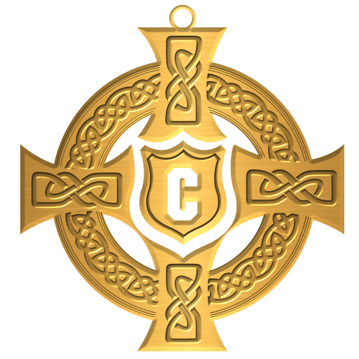
Captain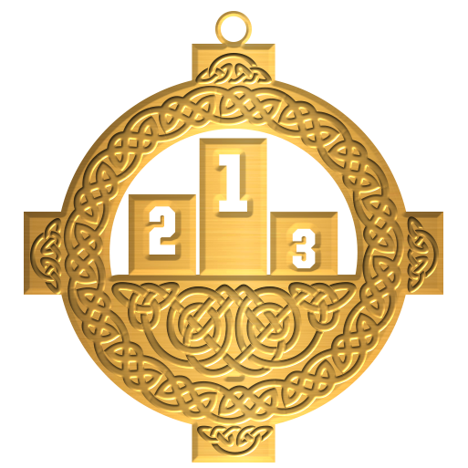
Top of the Class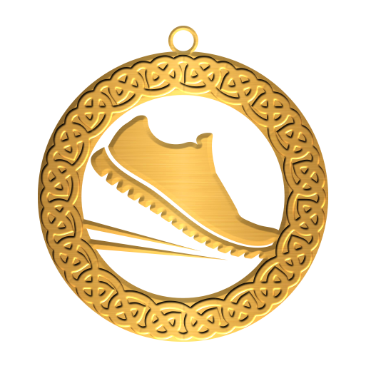
Off the Mark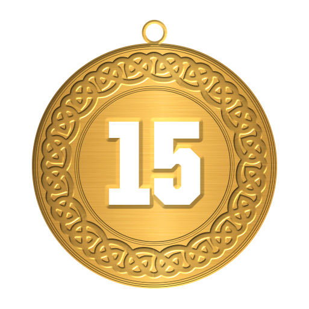
Made the Team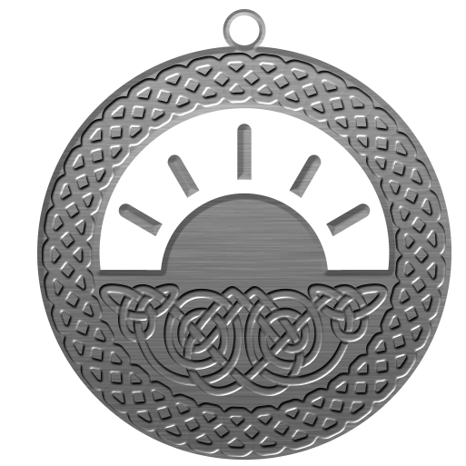
Early Bird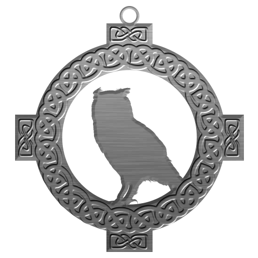
Night Owl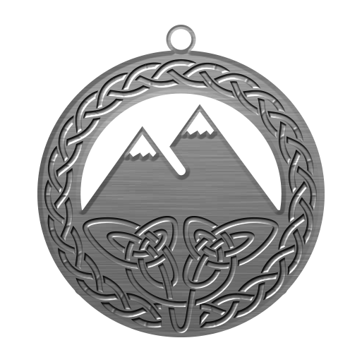
Mountaineer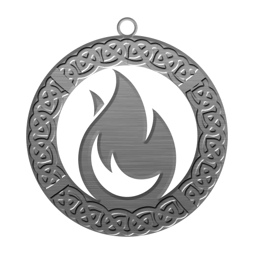
Feel the Heat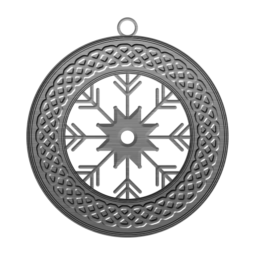
Gone Numb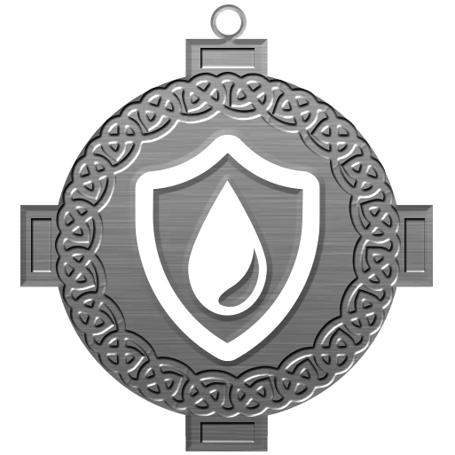
Waterproof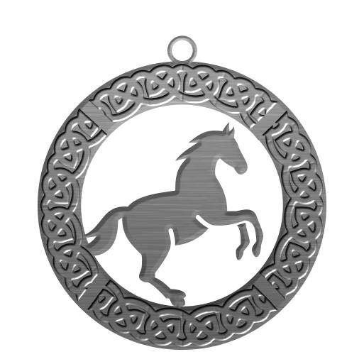
On the Trot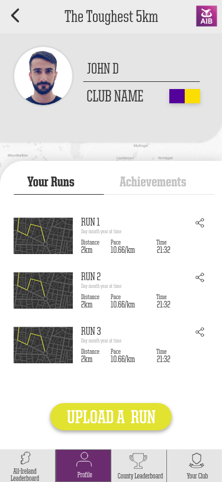
Profile and Run History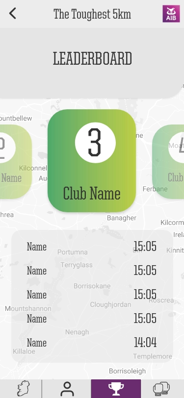
Club Leaderboard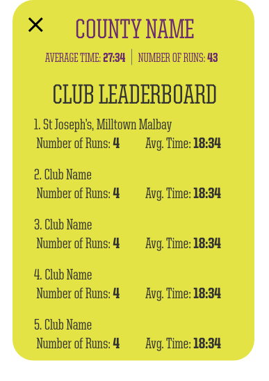
County Leaderboard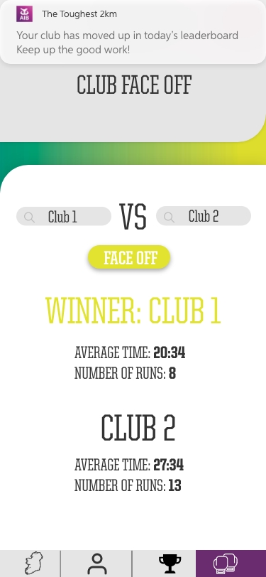
Club Face-OffThe onboarding flow was designed to be fast and meaningful. Choosing your county and sport wasn't just setup, it was the moment you declared which community you were running for.
Every county's GAA colours were mapped and displayed. Sport selection covered football, hurling, and camogie. Once you connected Strava, your runs immediately fed into your club's collective total.
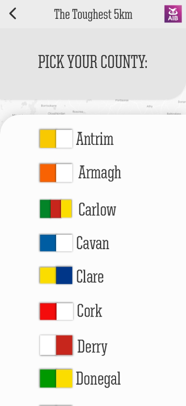
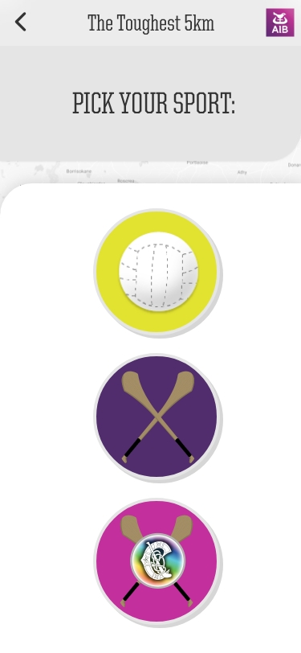
The app was designed in full and presented to AIB stakeholders. Then COVID priorities shifted. The brief moved on, the timeline collapsed, and the product never made it to development.
That's the honest version. It was an inspiring project to work on during a genuinely frightening time. The design work stands regardless of whether any code was ever written.
It was an inspiring project to be part of during very unnerving times.
Custom Celtic illustrated achievements, gold and silver tier, designed from scratch.
Brand designer, UX designer, illustrator and presenter, all on one project.
Of code ever written. Full product designed and never built. The brief moved on.